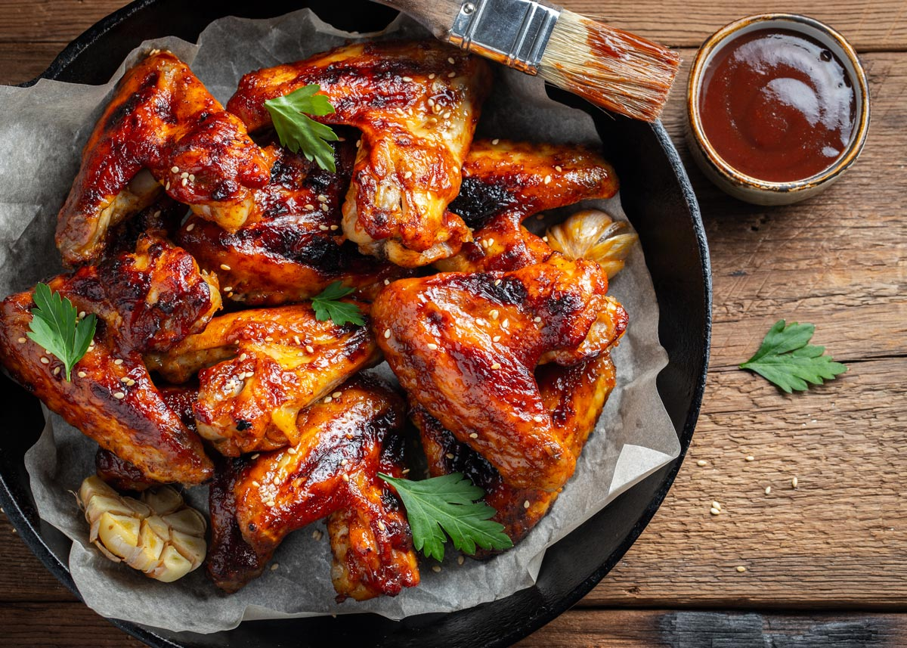

Nuestros platillos

Dōtonbori Canal
Is a manmade waterway dug in the early 1600's and now displays many landmark commercial locals and vivid neon signs.

Porto Timoni Double Beach
Near Afionas village, on the west coast of Corfu island. The two beaches form two unique bays. The turquoise color of the sea contrasts to the high green hills surrounding it.

Tritons Fountain
Located just outside the City Gate of Valletta, Malta. It consists of three bronze Tritons holding up a large basin, balanced on a concentric base built out of concrete and clad in travertine slabs.